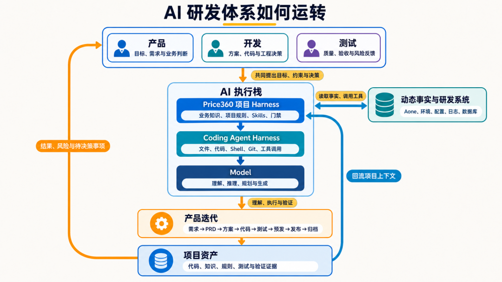
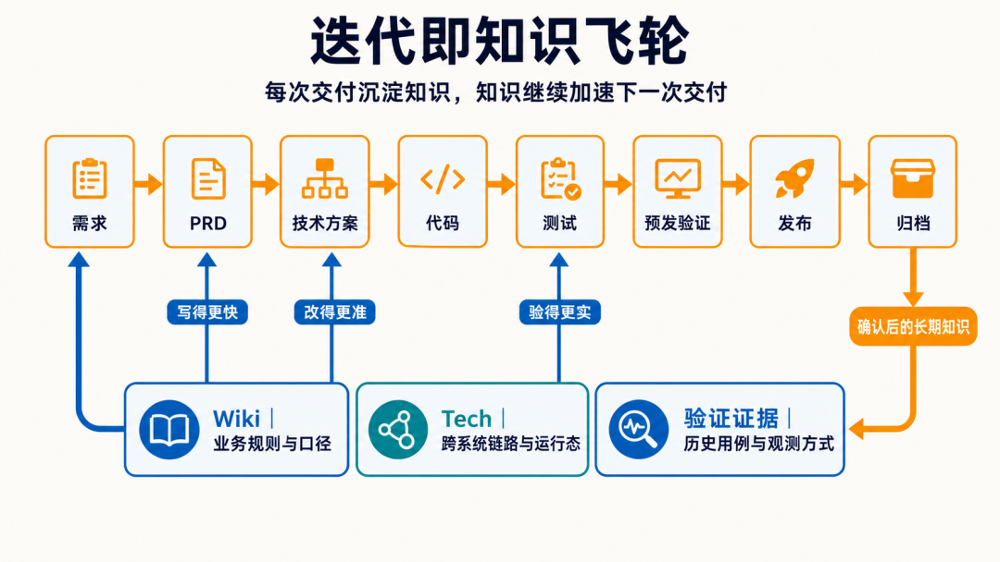
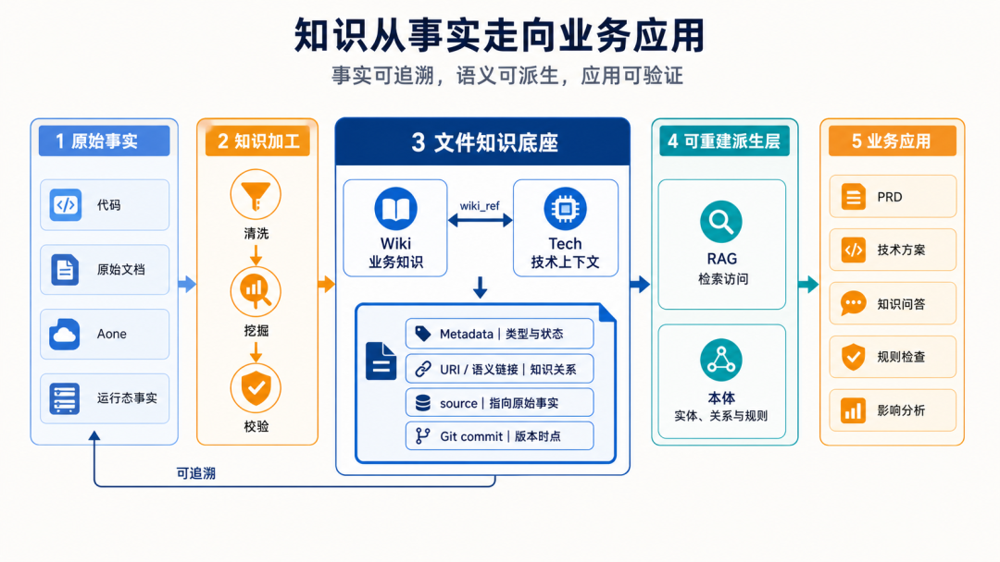
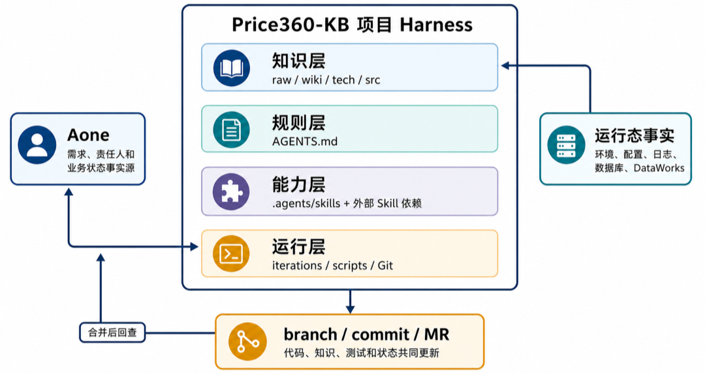
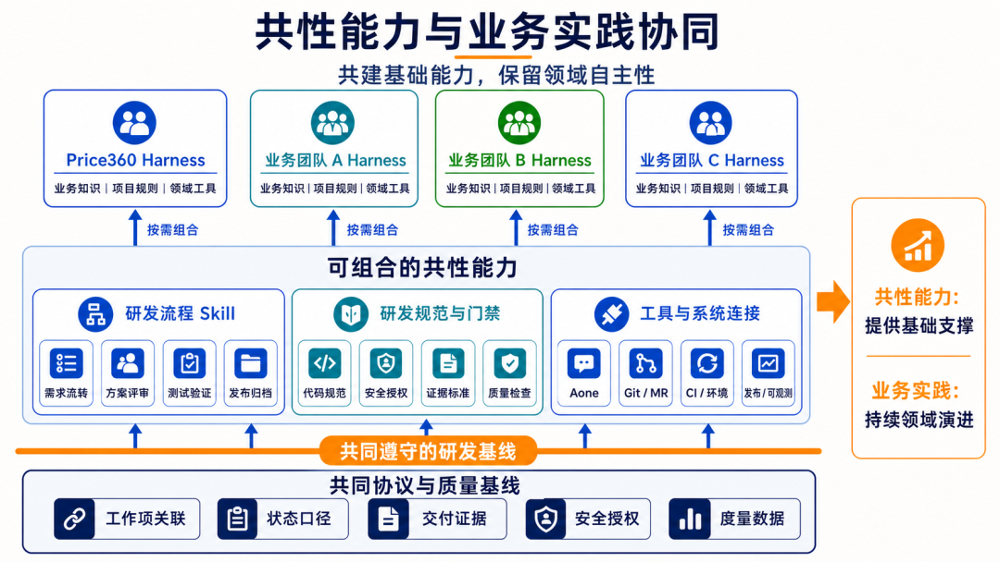

业务 AI 研发卡在上下文，不在模型：把知识、代码、规则和证据放进同一个 Git 工作空间
淘天营销&交易技术团队讲他们四个月的实践：从「AI 辅助编程」走到「AI 驱动的研发体系」，核心做法是在通用 Coding Agent 之上加一层项目 Harness（Price360-KB）。
公众号原文 精读版（加密，需密码）本页导读约 15 分钟

原文开头的摘要先把结论摆出来：业务 AI 研发真正的瓶颈是上下文，不是模型能力。团队的理念是「本地优先：Agent + 文件夹 + Git」，用 Price360-KB 这个项目 Harness，把业务知识、源代码、项目规则和验证证据放进同一个工作空间。迭代本身就是知识飞轮，所以不必等知识库完美再开工。文中还讲了 Harness 的三层结构、机器可读的迭代协议，以及「人决策、Agent 执行到底」的分工；最后判断项目 Harness 会随模型变强而收缩，但业务知识治理和质量责任不会消失，技术人员会更像 FDE。
Agent = Model + Harness；业务研发还要在通用 Harness 上再加一层项目 Harness
起点是今年 4 月：团队受 Karpathy 的 LLM Wiki 思路启发，开始让 AI 来驱动研发体系。做了 4 个月，研发方式从「AI 帮着写代码」变成「AI 驱动整套研发」。这篇是阶段总结。
阶段一：AI 辅助编程只提升局部动作
原文 · AI 辅助编程：提升局部动作效率做法是人在提示词输入框里贴代码、写要求，告诉 AI 怎么改。业务规则也只能靠这个输入框交代，换个新会话就得再说一遍。
阶段二：Coding Agent 开始执行任务
原文 · Coding Agent：从生成内容走向执行任务AI 能直接操作文件、代码、Git 和外部工具后，就从「帮忙」变成能自己检索、改文件、提交。作者用一个公式概括：Agent = Model + Harness，模型以外的部分都算 Harness。
分工是：Model 管理解、推理、规划和生成；Coding Agent Harness 提供 AgentLoop、读写文件、用工具、连环境。可它缺三样：业务知识、流程约束、完成标准，于是人得一遍遍补背景，Agent 甚至会把「命令跑通」误当成「业务交付已完成」。
阶段三：项目 Harness 让 AI 走完研发闭环
原文 · 项目 Harness：让 AI 进入完整研发闭环所以要在通用 Coding Agent 上面再加一层项目 Harness。Price360-KB 是团队在价格力业务里的内部实践：同一个工作空间里放着业务知识、源代码、项目规则、流程 Skill、质量门禁和验证证据；工作项、环境、配置、日志、数据库这些随时会变的事实，则通过 CLI、MCP 接进来。
公式随之扩展为：业务研发Agent = Model + Coding Agent通用Harness + 项目Harness。
现在产品、开发、测试都在这套体系里一起提目标、约束和决策；人的精力从「一步步指挥操作」挪到业务判断、选方案、验收结果和批准高风险动作上。

通用能力靠模型，能在项目里走多远靠上下文
讲实践前，作者先交代最重要的几条思考。内部仓库不能对外公开，所以第三章只抽出已经落地的核心机制；作者更希望读者弄懂这些机制为什么存在、怎样搬到自己的项目，而不是照抄目录和工具。
真正的瓶颈是上下文
原文 · 真正的瓶颈是上下文模型再强，进了真实业务系统也会缺很多信息：不知道当年为什么这么设计，不知道某条规则只管哪些业务，也分不清一段代码是现行链路还是早该废弃的旧实现。
要是每回都得人在对话里把背景重讲一遍，效果就取决于这次对话有多长、讲的人表达得好不好。同一个问题换个会话、换个人、换个 Agent，结果可能完全两样。
结论：业务 AI 研发能做到多好，并非只由模型说了算。模型提供的是通用本事；放进某个具体项目能发挥到什么程度，看上下文。
能放进文件夹的都进 Git；会变的事实留在原系统，用 MCP/CLI 现查
本地优先：Agent + 文件夹 + Git
原文 · 本地优先：Agent + 文件夹 + Git做法：项目要用的信息尽量都放进一个文件夹，用 Git 管。Coding Agent 天生会操作文件系统，Git 再补上版本、分支、评审、来源和回滚，用不着另建一套复杂平台和界面。所有操作都通过 Coding Agent 打开文件夹对话完成，作者强调不要自己手动改任何一个字。
「本地优先」不等于所有东西都存本地。业务知识、项目规则、源代码、迭代文档适合进 Git；Aone 状态、测试环境、日志、数据库、配置中心这类动态事实，仍从权威系统实时查，通过 MCP 或 CLI 交给 Agent。稳定的和会变的，在 Agent 执行时才汇到一起。
老系统怎么冷启动
原文 · 老系统的冷启动新项目能从头就按对 AI 友好的方式搭，老系统没这个条件。高价率运营这块，涉及好几个前端、后端，还有离线数据工程，知识散落，文档有的全有的缺。办法是先把已有资料和代码挂进项目，再写一个清洗 SKILL，从代码和杂乱文档里提炼出结构化知识。
具体到 Price360-KB：把相关代码仓库作为 Git submodule 挂在 src/ 下，以前人工写的文档资料挂到 raw/ 目录。有了第一批知识后，再设计采访稿，用钉钉AI听记采访核心开发和产品，把采访原稿交给 Coding Agent 整理进知识库，把只存在人脑子里的业务知识补上。
别等知识库完善了才上手。要点是每做一个需求就顺带补一点，让知识越转越多，成为飞轮。
每个阶段都在给下一阶段生产上下文，所以项目开始时不需要完美知识库

这条链路里每一环都给下一环产出上下文：PRD 补上业务怎么定义、怎样算验收通过，技术方案记下系统链路，开发和测试继续核对这些内容，归档时把确认过的长期知识写回 wiki 和 tech。改动全走 Git，一次完整迭代下来，代码和知识库保持一致。
知识反过来又加速下一轮：有了业务规则，Agent 写 PRD 不用从零猜概念和口径；有了跨系统技术链路，方案更容易找准该改的地方；手里有以往的用例和观测手段，测试也不用每回从头想怎么验。
因此项目开局不需要完美的知识库。知识可以先作为做产品时顺带的产出，慢慢再反过来给后面的迭代提速。
先做文件 Wiki，因为知识和代码能在同一个 MR 里一起改、一起评审
LLM Wiki、RAG、本体论不是三选一，它们各管一件事：文件 Wiki 管知识怎么维护、评审和打版本；RAG 管怎么找到相关内容；本体负责表达实体、关系和领域语义。
优先选文件 Wiki，理由是知识的更新路径够短：代码、文档、测试和索引放进同一个 MR，一起评审，合并后是同一个版本。一次迭代能同时改功能和知识，减少「代码变了、文档还停在旧版本」。
反过来，如果拿外部 RAG 平台或本体图谱当主知识源，代码一变还得走同步、切片、萃取、索引或图谱发布。放在现在的研发流程里，这条链路更长，知识和真实代码对不上的机会也更多。
作者也承认本体论在知识应用上有优势，但它缺少知识的生产和维护；price360-kb 这种模式恰好补上这块，让产品、运营、开发、测试所有角色一起维护同一个知识库。

知识库不复制代码，只存代码之外、会影响判断的信息
一个常见的反面：给每个类、每个方法都重写一份解释。这种文档生成快、过期也快，最后变成一份和代码抢「谁说了算」的实现说明。
Price360-KB 的长期知识只分两类，下面分别说。
wiki 写给产品、运营、测试和 Agent 看，存业务概念、规则、口径、角色、流程和异常处理。业务知识往往零散又没人持续维护，所以既可以取自现有产品材料，也可以从代码里挖。产品在 PRD 阶段补历史逻辑，开发、测试阶段继续核对，迭代收尾时再归档进 Wiki。
tech 存的是代码自己说不清、却会左右 Agent 判断的技术背景，比如跨系统的上下游怎么连、接口与数据怎么对应、新旧链路切换、哪些已废弃、运行时拓扑和观测方式。方法里的具体逻辑以代码为准，文档只写调用哪个接口、哪个方法、它在整条链路里处在哪；只有特别重要、反复用到的逻辑，才值得留一份稳定摘要，省得 Agent 每次重读大量代码。
一句话：别让知识库去抄代码；它该存的是代码里没有、却左右业务判断和技术判断的那些信息。
Price360-KB 是能被 Coding Agent 直接打开执行的 Git 工作空间，不是独立平台
Price360-KB 不是另起炉灶的研发平台，而是一个 Coding Agent 能直接打开、直接干活的 Git 工作空间。稳定的上下文、每次迭代的产物、项目规则、自动化能力，都在这里归拢，再接上外部系统里的动态事实。

原文给的是简化后的目录树（真实项目另有模板、客户端配置、辅助工具），只保留理解 Harness 必需的部分。下面只摘树根和第一行，完整目录树在精读版；各目录的用途用自己的话整理在表里。
price360-kb/
├── AGENTS.md # 项目协作协议与总入口| 目录 | 放什么 |
|---|---|
| iterations/ | 每个需求从 PRD、方案、测试到归档的文件 |
| wiki/ · tech/ | 业务知识（给产品、运营、测试看）· 跨系统链路等技术背景 |
| raw/ · src/ | 没改写过的原始事实材料 · 挂进来的业务代码仓库 |
| olap/ · briefs/ · outputs/ | 指标、表结构和分析 SQL · 依据事实源生成的专题说明 · 能重建的索引与分析结果 |
| .agents/ | skills/（各类领域能力）、scripts/（工作区、校验、同步、发布门禁），外加两个声明文件：关联了哪些代码仓库、依赖哪些公共 Skill |
这棵树同时划了两条边界：事实放哪、执行归谁。知识、代码、迭代证据各有固定位置；AGENTS.md 统一定规则，.agents 把规则变成能执行的能力。Agent 不用先学一个平台界面，打开项目就能顺着同一套结构查上下文、推进任务、留下证据。
每份知识文件都带 Metadata、来源和版本，Agent 能判断它是什么、能不能用
工作空间按用途分层：raw 放原始材料，wiki 放业务概念、规则和口径，tech 放跨系统链路和关键技术背景，src 挂实际代码，iterations 目录放每个需求一路从 PRD 走到归档留下的过程文件。每层的事实边界不同：会议记录不能直接当成已确认的业务规则，旧文档也不能盖过当前代码。
一份知识文件由五样东西构成：正文、Metadata、链接、事实来源、Git 版本。
原文举了一份业务规则文档的 Metadata 示例，这里摘前三个字段，完整示例见精读版：
title: "价格归因领域知识"示例里还有 tags、status（有效）、version（v1.1）和一个 source 列表，指向 raw/ 下的原始说明和 tech/ 下的链路详解。前四个字段（标题、分类、标签、状态）让 Agent 不必读完全文，就知道这份文档讲什么、适不适用；source 字段则交代这条知识的出处：是哪份原始材料、哪次技术分析，还是哪个代码版本。
正文提到别的知识文件时，用相对路径链接，方便顺藤摸瓜。tech 文档再用 wiki_ref 指回对应的业务知识，连成「业务规则 → 技术链路 → 源代码」的路径：Agent 可以从业务问题找到技术入口，也可以从代码改动反查哪些业务规则可能受影响。
生成知识统一走项目 Skill，补齐标签、来源和索引；再定期做健康检查，清理迭代里攒下的重复、冲突、失效链接和没有来源的结论。
协议、能力、门禁分三层：规则说怎么做，Skill 组织任务，脚本把门禁执行到底
项目 Harness 并不是一份不断加长的提示词，Price360-KB 把它拆成了三层：
- AGENTS.md：项目级协作协议，写明以哪里为事实源、研发分几段、哪些点要人来决策、授权到哪为止、怎样才算完成。
- skills 目录（.agents 下）：能组合使用的领域能力，分别负责 PRD、技术方案、测试设计、回放、排障、知识归档等。
- scripts 目录（.agents 下）：适合确定性执行的动作，比如检查工作区、校验产物格式、同步状态、提交推送、发布后回查。
分层后各管一件事：规则讲「应该怎么做」，Skill 组织一类任务，脚本把靠语言自觉保证不了的门禁执行到底。底下的模型或 Coding Agent 产品可以换，项目自己的协作协议照样留着。
公共能力也不往每个项目里复制。代码平台、中间件、数据开发等通用 Skill 在依赖清单里写明从哪来、兼容哪个版本，项目 Skill 只管业务编排。这样公共能力能统一升级，业务团队也能接着维护自己的领域规则。
迭代目录里的文件是阶段之间的接口；上游没确认，下游不开工
每个需求有自己的迭代目录，里面依次有 prd.md、solution.md、test/design.md，测试用例和测试报告各一组文件（放在 test/ 下），最后是 archive.md。它们不是事后总结，而是上一阶段交给下一阶段的接口。
PRD 用 REQ、AC 写需求和验收标准；技术方案把每条需求和验收标准落到具体实现任务、可观测点上；测试设计和用例再用 TC 建立覆盖关系。状态、版本、依赖、证据字段格式固定，于是 Agent 能自己查：某条验收标准有没有方案接住、有没有测试覆盖、用例是不是还对得上当前方案版本——不用人通读几份文档凭印象判断。
- 需求
- PRD
- 技术方案
- 测试设计
- 代码
- 预发验证
- 发布归档
阶段不会自动跳过 PRD 没确认，不写技术方案；方案和测试设计没确认，不进代码实现；拿不出真实的测试证据，就不准备发布。上游有实质变化，下游产物必须跟着改，旧证据也不能接着用。
配置写了某环境不等于已部署；接口返回成功不等于副作用已发生
稳定上下文进 Git，动态事实照旧从权威系统实时读：工作项平台管需求状态和负责人，代码平台管分支、提交和评审，测试环境、日志、数据库、配置中心则反映运行时的实际情况。把这些事实串起来的线索是：迭代 ID、工作项 ID、分支、commit、MR。
这个区分很要紧。配置文件里写着某个环境，不代表当前代码已经部署过去；接口回了「成功」，异步消息有没有被消费、内部判断有没有走到、数据有没有真正写库，也都还不知道。所以 Price360-KB 规定：测试先要绑到当前分支实际部署的那个环境，然后分场景去看返回值、日志、调用链、数据库里的结果，把 traceId、执行时间、断言结果写回测试资产。拿不到稳定证据的场景就留作人工验证，不能包装成「自动化通过」。
发布用同一把尺子：合进主干只算走完一步，接着还得回头核对工作项和各方协同的状态。代码版本、业务状态、交付证据三者一致，这次迭代才算真正结束。
人做判断和授权，Harness 把判断传到底，缺证据或越权就拦下
Agent 负责查上下文、生成产物、跑检查、调工具、收集证据。
人负责描述需求、选方案、确认测试设计、验收预发结果，以及放行合并、放行上生产。
就算人已经选定方案，风险高的操作也不会因为之前一句笼统的「可以」就被自动执行。
这样分工不是把人踢出流程，而是让人不必一直盯着操作步骤。人给出业务判断后，由 Harness 把它传到后面的文件、代码、测试和状态里；一旦缺证据或越过授权边界，就把流程拦下。
这套 Harness 并非一开始就规划好，是被真实问题逼出来的：多个需求并行把目录搞乱了，就加工作区隔离；接口成功却证明不了异步链路跑完，就补一份可观测性契约；外部状态抢先更新、前后对不上，就把发布改成合并后回查。作者说它的演进办法很朴素：真实交付里冒出来的每个问题，都沉淀成下回能复用的规则、检查或工具。也就是说，项目一边交付业务功能，一边在改良自己下回怎么交付。

共性能力只沉淀成熟实践和数据协议，业务团队保留自己的项目 Harness
从效率、成本、质量、团队管理看，作者认为 AI 研发体系将来一定会有横向的公共能力建设。但现在都还在摸索，各团队有各自的最佳实践；就连他自己团队按同一套思路做，也已经长出好几个独立的项目 Harness。
业务系统差别很大：知识结构、测试方法、运行环境、发布风险各不相同，很难一套实现通吃。更合理的边界是：已经验证过的共性能力拿来复用，业务团队保留贴合自己领域的项目 Harness。

AI 正让生成、修改、维护项目 Harness 变便宜，业务团队可以围着自己的知识、规则和工具持续打磨，不必为了形式统一牺牲领域适配。不过作者也说，共同的数据协议和质量基线，对大团队的管理和提效有好处。
稳一点的协作办法：把已经成熟的做法，整理成拿来就能用的参考实现，以及能拼装的能力模块：既有规定需求流转、方案评审、测试验证、发布归档的流程 Skill，也有代码规范、安全授权、证据标准、质量门禁。没成熟实践的团队直接用参考方案，已有积累的按需取用，之后各自在项目层接着改。
真正需要大家先说好的，是工作项、代码、测试、发布四者之间怎么传数据（数据协议），以及状态、证据、安全、度量的口径。数据底子一致了，才谈得上衡量效率、项目 Harness 质量和人的能力。
关于指标，作者认为现在的 AI 代码采纳率受太多因素影响，体现不了人的工作质量和驾驭 AI 的程度，更像不得已的妥协。他设想：如果建立统一的 AI 研发体系数据协议，用 Aone 工作项串起一个需求从提出到上线的全部 AI Trace，让 Aone 节点流和 Trace 里的 step 对应起来，就能让 AI 分析一个需求上线的质量。例如跨对话反复补上下文，说明效率不高；反复纠正前面的错误，说明项目 Harness 还要完善。这样也能看出离自动化 AI 研发还差什么：哪些信息要补、哪些地方必须由人决策。
通用能力会吃掉一部分项目 Harness，但业务知识、规则、验证和责任不会自动消失
回到开头的 Agent = Model + Harness。Model 和通用 Coding Agent 的 Harness 都在变强：今天项目还得自己维护的 Prompt、规则和工具，会有一部分被模型或 Coding Agent 产品吸收。文件搜索、代码理解、Git、浏览器、工具调用、多 Agent 协作会逐渐变成通用能力，业务项目要维护的 Harness 随之收缩。
但有几样不会自动消失：业务知识以及对这些事实的治理；项目的规则和「哪些事要人拍板」的边界；贴合领域的工具和对各系统的适配；还有项目自定的验证标准和对质量的担当。
业务技术人员值钱在哪，也会因此被重新定义。产品和技术的边界会继续模糊，技术人员既要懂 AI 也要懂业务，能设计项目规则和领域工具，并为端到端的交付结果负责。
作者的判断是：这个角色会更像 FDE（Forward Deployed Engineer）——深入业务一线，把问题、知识、系统与交付结果串起来。模型和通用 Agent 再强，业务技术人员要守住的是三样：对业务的理解、对系统的连接能力、对结果的责任。

团队介绍
原文 · 团队介绍作者默达，所在团队是淘天集团的营销&交易技术团队，负责淘系的价格力建设，做价格方面的基础能力、经营工具与技术平台，帮业务看懂价格表现、发现经营问题、推动价格优化；同时在试着把 AI 用到沉淀业务知识、协作研发、端到端交付上，Price360-KB 就是其中一项。
原文最后的「拓展阅读」是公众号栏目导航（3DXR技术、终端技术等），与本文内容无关，未收录。¤ 拓展阅读 ¤